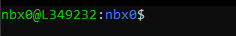
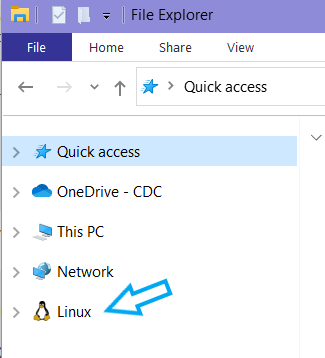
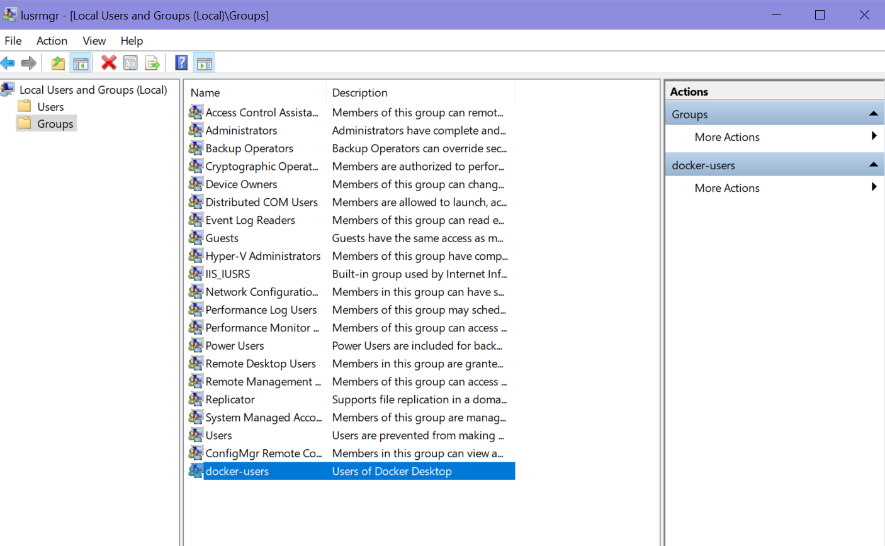

vignettes/getting-started.Rmd
getting-started.RmdInstall linux on a Windows 10/11 computer
You can get a full linux environment using Windows Subsystem for Linux, or WSL. The second version of WSL is WSL2 and is the recommended version to use.
- Check your Windows version and build number, select Windows logo key + R, type winver, select OK.
- Windows 10 version 2004 and higher (Build 19041 and higher) or
Windows 11 is required.
- You can update to the latest Windows version by selecting Start > Settings > Windows Update > Check for updates.
- Run powershell as administrator
- Run the following command in Powershell:
To paste into a terminal, you “right click”
If this command errors out, you may need to turn on “virtualization”.
- Restart your computer
- Reopen Powershell and enter the following commands:
If either of these commands errors out, try troubleshooting
Following successful installation, an Ubuntu terminal should pop up
that looks like: 
- Enter a username that will be exclusive for WSL. Press
Enterand then enter a password. It is very important, to choose a memorable password. If you forget your password you will need to reinstall Ubuntu.
A “prompt” will then appear in the screen like:  with
nbx0 replaced by your entered username and
L349232 replaced with your computer’s name.
- Restart your computer.
- To access the Ubuntu terminal in the future, simply search for
Ubuntuin the Window’s task bar and click on the app.
Further details can be found on Microsoft’s website here: https://docs.microsoft.com/en-us/windows/wsl/install
**Windows 11 and updated versions of Windows 10 should
automatically mount Linux. If you have “Linux” in your
File Explorer, you are good to go and do not need to
perform this step.

If you do not see this, you need to “map the WSL drive”
Install Docker Desktop
Docker allows you to run software inside an isolated “container image” on your computer with all of that application’s needed dependencies. Make sure to install the version for your operating system.
If you get an error related to Docker user groups, go to “Edit local users and groups” from your Windows search bar Click Groups –> docker-users –> Add… –> then enter your username

Install Docker CLI (Command Line Interface) in WSL2
All following lines of code can be copy/pasted into your terminal.
Pasting using CTRL+V into a terminal my not
work. After copying a line of code, try pasting into the terminal with a
right click of your mouse or trackpad.
Open Ubuntu or Mac terminal
Uninstall old versions of Docker
- If you have never installed Docker on your machine, you will see an error message about docker not being found. This is expected and you can move to step 3.
- Tell WSL2 where to look for Docker CLI tools
- During installation, you will be prompted multiple times to enter
‘y’ or ‘n’ to proceed. Each time, input ‘y’ and click
Enter
curl -fsSL https://download.docker.com/linux/ubuntu/gpg | sudo gpg --dearmor -o /etc/apt/keyrings/docker.gpgecho "deb [arch=$(dpkg --print-architecture) signed-by=/etc/apt/keyrings/docker.gpg] https://download.docker.com/linux/ubuntu $(lsb_release -cs) stable" | sudo tee /etc/apt/sources.list.d/docker.list > /dev/null- Install Docker CLI
- Verify successful installation
- This command downloads a test image and runs it in a container. When the container runs, it prints a confirmation message and exits.
- Whenever you enter the
sudocommand, you will be prompted for your WSL2 password.
If you are seeing errors, click here.